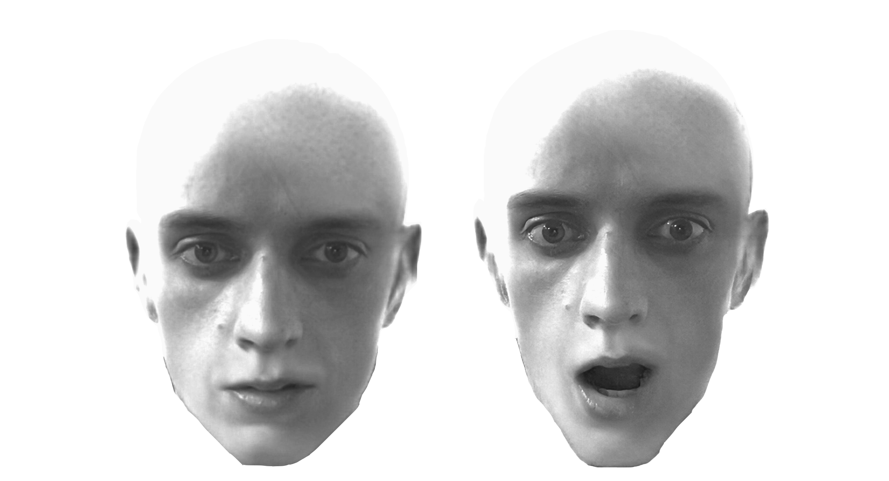
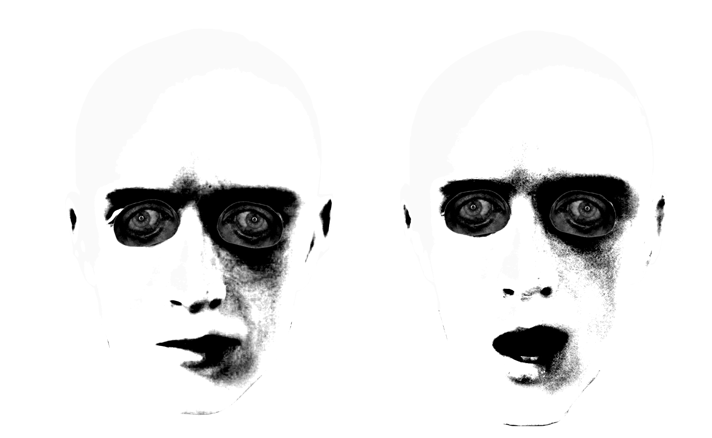

Role
Audio Visual Designer
Timeline
4 weeks
Tools
Adobe Photoshop, After Effects, Touch Designer
Type
Class Project
Window into another World
Audio Visual Designer
4 weeks
Adobe Photoshop, After Effects, Touch Designer
Class Project
Final version
Safe Space is an interactive installation that gently invites the visitor to take a look into someone else’s life. What starts as an innocent observation of everyday moments slowly turns into a more unsettling experience, where increasingly personal and intimate data is revealed. The installation plays with the idea of false security and shows how easily privacy can fade in a world full of digital control. It also raises the question of where the line is between watching and being watched.
The challenge was to figure out how to gradually show how invasive the “Big Brother” character becomes without revealing everything too quickly. It was also difficult to decide what kind of personal information would actually make people uncomfortable, while still keeping it believable and not too extreme.
We also wanted the character feel unsettling, but not overly creepy.
We built a slow build-up where the surveillance becomes more intense over time. To make the Big Brother character feel unsettling, we designed it to look uncanny instead of human, using a mask-like face with strange animations. This helped create discomfort and made it feel like something is always watching, but not in a natural or human way.
First version
Some feedback we got, which I found interesting, was to make the installation feel less creepy at first. This would build more trust with the viewer, so the shift later would hit harder. It’s similar to how some tech companies present themselves as friendly and helpful while still collecting a lot of data in the background.
That’s why we completely changed the look of the installation. The face became just a mouth, which feels less human and less creepy than before. The voice was made more calm and trustworthy, and the environment was made a lot brighter to create a more open and safe feeling. Unfortunately we could not project the installation again in a big room to test it with people. So we don't know if it has the desired outcome
As I said before, our main inspiration was 1984 and the Big Brother face. We started by editing my face to look as strange as possible, adding a bald look and making it black and white like in the film. But in the end it still felt too normal and not unsettling enough.

First Face
By turning up the contrast, and adding someone elses eyes. We were able to create a stronger uncanney feel.

Second Face
We wanted the character to have really choppy movement while talking. We did this by linking image changes to the audio levels in TouchDesigner. It makes the face feel artificial, like it is trying to act human but never fully does.
For the tablet, it was mostly about taking the photos, styling them to look like security camera footage, and then syncing them with the right moments in the audio so everything matches up in timing. The hardest part was getting the right shots and making them feel authentic, like real security cam footage instead of staged images.
At the start, we experimented with AI voices to create the narration, but it never really felt right. It sounded too clean and emotionless, and didn’t carry the tension we wanted, so we decided to move away from it.
We focused on making the background music feel ominous to create a tense atmosphere. We also edited my voice to sound more artificial and creepy, to make the “Big Brother” character feel unsettling.
Later, we changed direction and made it sound more trustworthy. We added natural background sounds and kept the voice clean without effects for most of the piece. Only at the end, the tone shifts and the sound design becomes more distorted to reveal the darker side.